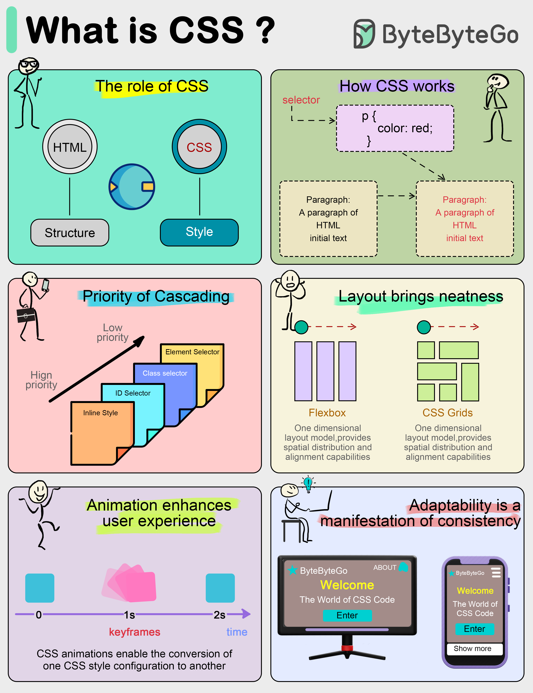

Front-end development requires not only content presentation, but also good-looking. CSS is a markup language used to describe how elements on a web page should be rendered.
What CSS does CSS separates the content and presentation of a document. In the early days of web development, HTML acted as both content and style.
CSS divides structure (HTML) and style (CSS). This has many benefits, for example, when we change the color scheme of a web page, all we need to do is to tweak the CSS file.
How CSS works CSS consists of a selector and a set of properties, which can be thought of as individual rules. Selectors are used to locate HTML elements that we want to change the style of, and properties are the specific style descriptions for those elements, such as color, size, position, etc.
For example, if we want to make all the text in a paragraph blue, we write CSS code like this: p { color: blue; } Here “p” is the selector and “color: blue” is the attribute that declares the color of the paragraph text to be blue.
Cascading in CSS The concept of cascading is crucial to understanding CSS.
When multiple style rules conflict, the browser needs to decide which rule to use based on a specific prioritization rule. The one with the highest weight wins. The weight can be determined by a variety of factors, including selector type and the order of the source.
Powerful Layout Capabilities of CSS In the past, CSS was only used for simple visual effects such as text colors, font styles, or backgrounds. Today, CSS has evolved into a powerful layout tool capable of handling complex design layouts.
The “Flexbox” and “Grid” layout modules are two popular CSS layout modules that make it easy to create responsive designs and precise placement of web elements, so web developers no longer have to rely on complex tables or floating layouts.
CSS Animation Animation and interactive elements can greatly enhance the user experience.
CSS3 introduces animation features that allow us to transform and
animate elements without using JavaScript. For example,
“@keyframes” rule defines animation sequences, and the
transition property can be used to set animated
transitions from one state to another.
Responsive Design CSS allows the layout and style of a website to be adapted to different screen sizes and resolutions, so that we can provide an optimized browsing experience for different devices such as cell phones, tablets and computers.